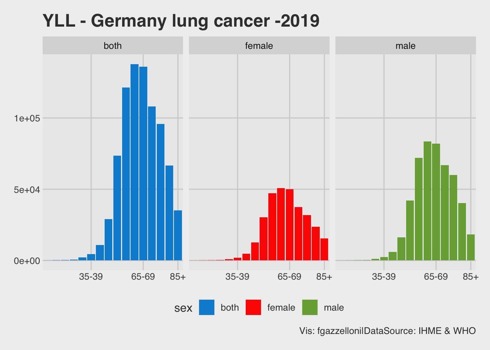

devtools::install_github("Fgazzelloni/hmsidwR")Measuring Health Performance
Overview
These days measuring performance is very appropriate for many different topics. Thinking about health and the fast changing environments, including climate changes, require a ready tool for identifying possible future outcomes. On health, interesting simple metrics are used to classify the state of health of a population, so to be comparable with other near and far.
Here is a spec of my latest project where I am collecting all that I learned since the start of the Covid19 pandemic on a summary of the techniques used for measuring the health status of a population when in conjunction with an extreme event. Many tools are available and ready to use for the most exceptional purpose someone might had in mind, and I had difficulties choosing one on top of the other. But, why choosing if you can combine them?

There are three metrics that are used for the purpose of classification in the public health, the DALYs, YLLs, and the YLDs. Respectively are the Disability Adjusted Life Years, Years of Life Lost, and Years Lived with Disabilities.
Before going into the calculation detail, the definition of good health and well being is required.
The WHO constitution states:
“Health is a state of complete physical, mental and social well-being and not merely the absence of disease or infirmity.”
An important implication of this definition is that mental health is more than just the absence of mental disorders or disabilities.
Let’s load the {hmsidwR} package, still at its very early stages; a development version can be installed from GitHub:
It contains some interesting datasets:
The Global life tables: Glifetables. A dataset provided by the World Health Organization (WHO). Global Health Observatory data repository
?hmsidwRAnd the Germany lung cancer: Germany_lungc. A dataset provided by the Institute for Health Metrics and Evaluation (IHME). GBD Results
hmsidwR::germany_lungc %>% head# A tibble: 6 × 8
age sex prevalence prev_upper prev_lower dx dx_uppe dx_lower
<chr> <chr> <dbl> <dbl> <dbl> <dbl> <dbl> <dbl>
1 10-14 male 0.08 0.13 0.05 0.322 0.461 0.217
2 10-14 female 0.18 0.32 0.09 0.457 0.761 0.248
3 10-14 both 0.13 0.22 0.07 0.779 1.21 0.468
4 15-19 male 0.48 0.77 0.29 1.27 1.75 0.916
5 15-19 female 0.9 1.52 0.5 1.56 2.46 0.941
6 15-19 both 0.68 1.02 0.44 2.83 3.88 2.07 germany_lungc %>%
ggplot(aes(age, dx, fill = sex)) +
geom_col() +
facet_wrap( ~ sex) +
scale_x_discrete(breaks = c("35-39", "65-69", "85+")) +
ggthemes::scale_fill_fivethirtyeight() +
ggthemes::theme_fivethirtyeight() +
labs(title = "Germany lung cancer -2019",
caption = "Vis: fgazzelloni|DataSource: IHME")
The combination of this to piece of information, the life expectancy and the expected value of lung cancer cases, in proportion of the Germany population, are combined by age class and divided by sex to obtain the YLLs, the numbers of years of life lost.
In this case for Germany data is available from the age class 10-14, if we would like to improve this analysis it required some missing value imputation, through data feature engineering.
# A tibble: 6 × 3
age sex yll
<chr> <chr> <dbl>
1 10-14 both 51.7
2 10-14 female 31.5
3 10-14 male 20.6
4 15-19 both 174.
5 15-19 female 99.7
6 15-19 male 75.4yll %>%
ggplot(aes(age, yll, fill = sex)) +
geom_col() +
facet_wrap( ~ sex) +
scale_x_discrete(breaks = c("35-39", "65-69", "85+")) +
ggthemes::scale_fill_fivethirtyeight() +
ggthemes::theme_fivethirtyeight() +
labs(title = "YLL - Germany lung cancer -2019",
caption = "Vis: fgazzelloni|DataSource: IHME & WHO")
To build the YLDs, the numbers of years lived with a disability due to a disease or injury, we need more data: the prevalence, and the disability weights.
source:
Then, the sum of the YLL and the YLD provides the overall value of the DALY which is the key metric used to state the health of a population, and it is used to make comparisons among population of different countries, as well as begin used to provide a comprehensive assessment of the impact of disease and injury on a population, and help prioritize public health interventions and evaluate the effectiveness of public health programs.
Let’s now have a look at how infectious diseases can affect the DALYs. The COVID-19 pandemic has had a significant impact on DALYs metrics worldwide.
Still results are not fully available, but several of the risk factors and non-communicable diseases (NCDs) highlighted by the GBD study, including obesity, diabetes, and cardiovascular disease, are associated with increased risk of serious illness and death from COVID-19, and so, as a consequence linked with an increase of the overall level of DALYs. See The Lancet: Latest global disease estimates reveal perfect storm of rising chronic diseases and public health failures fuelling COVID-19 pandemic
COVID-19 is expected to show clearly that it has been the leading cause of global DALYs in 2020.
More information on the level of findings are in this interesting article: https://doi.org/10.1016/S0140-6736(20)30925-9 on the Lancet by the GBD collaborator team.
Global impact of selected infectious disease on DALYs
Looking at the Global impact of some infectious diseases, such as: Ebola.
The impact of Ebola on DALYs in 2019 can be assessed by comparing the number of DALYs due to Ebola in 2019 to the DALYs caused by other diseases or conditions during the same period.
According to the Global Health Data Exchange (GHDx), the estimated global DALY rate for Ebola virus disease in 2019 was 0.0005, which is relatively low compared to other leading causes of DALYs, such as cardiovascular diseases, lower respiratory infections, and neonatal disorders. See IHME Ebola — Level 3 cause
Import data on global burden of disease (GBD) for a given year, here I already downloaded the cvs file and save it as RData.
# A tibble: 19 × 3
age_name val n
<chr> <dbl> <int>
1 1-4 years 24933. 1
2 10-14 years 8994. 1
3 15-19 years 12520. 1
4 20-24 years 15651. 1
5 25-29 years 17288. 1
6 30-34 years 19457. 1
7 35-39 years 22626. 1
8 40-44 years 26218. 1
9 45-49 years 30105. 1
10 5-9 years 9136. 1
11 50-54 years 36694. 1
12 55-59 years 45169. 1
13 60-64 years 55901. 1
14 65-69 years 67373. 1
15 70-74 years 83145. 1
16 75-79 years 99766. 1
17 80-84 123203. 1
18 85+ years 151604. 1
19 <1 year 256548. 1Let’s have a look at the DALYs rates and consider the average value by 5 years range, then calculate the total DALYs for all ages in 2019.
avg_dalys_2019 <- mean(df_dalys_2019$val)
avg_dalys_2019[1] 58227.96total_dalys_2019 <- sum(df_dalys_2019$val)
total_dalys_2019[1] 1106331Import data on infectious diseases, and select Global, Ebola, both sex.
ebola_global_2019 <- infectious_diseases %>%
filter(location_name == "Global",
sex_name == "Both",
cause_name == "Ebola") %>%
select(!contains("_id"))
# Calculate total COVID-19 DALYs for 2019
total_ebola_global_2019 <-
sum(ebola_global_2019$val)
# Calculate the percentage change in DALYs due to COVID-19
percent_change_dalys <- round((total_ebola_global_2019 / total_dalys_2019) *100,4)
# Print the percentage change in DALYs due to COVID-19
cat("Total impact of Ebola virus Globally on DALYs rates in 2019:", percent_change_dalys, "%")Total impact of Ebola virus Globally on DALYs rates in 2019: 0.0037 %However, the impact of Ebola on DALYs is more significant in certain African regions, it accounts for the whole population. For example, during the 2014-2016, the Ebola outbreak in West Africa caused an estimated 11,000 deaths and 261,000 DALYs lost.
Overall, while the global impact of Ebola on DALYs in 2019 was relatively low, it is still an important health concern in areas where outbreaks occur, and efforts to prevent and control the disease are crucial to reducing its impact on affected populations.